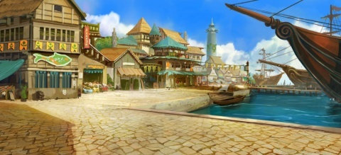
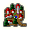

|
|  | Локация: | Гавань Маликена |
|---|---|---|
| Регион: | Ланфар, Громыхающий лес | |
| Карта: | | |
| Местность: | | |
| Незаметность: | 15 | |
| Открытие: | |
| Районы Гавани Маликена
|
||
Гавань Маликена является крупным городом Ланфара по типу Города Соколинии в Соколинии. Здесь сконцентрирована вся жизнь игроков в ланфарском регионе.
 Гавань Маликена (Городские ворота)
| Район: | Гавань Маликена | |
|---|---|---|
| Местность: | |
| Природные ресурсы, добытые в северных областях Ланфара, привозят в гавань Маликена, а уже отсюда отправляют в соколинию. Произведенные из этих ресурсов важнейшие товары возвращаются сюда и распределяются по магазинам, где их приобретают колонисты. | ||
Местные обитатели
- Орвар, начальник порта.
- Можете продать ему своих спутников, которые вам больше не нужны.
- Скупает очень много всяческих ресурсов и предметов.